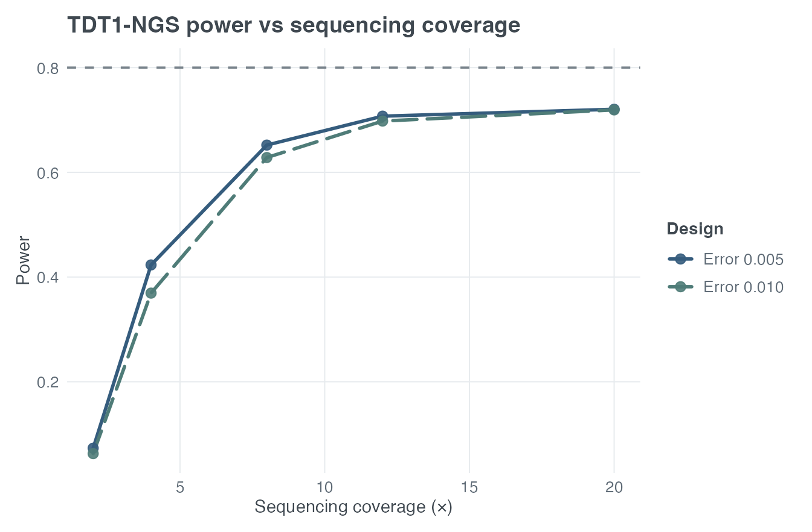
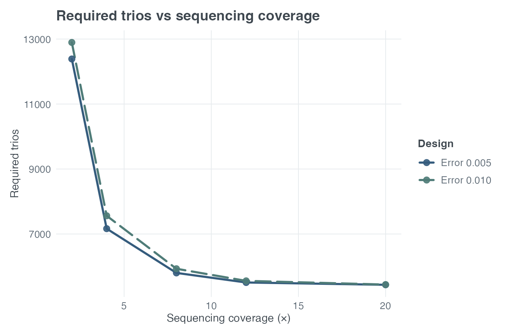
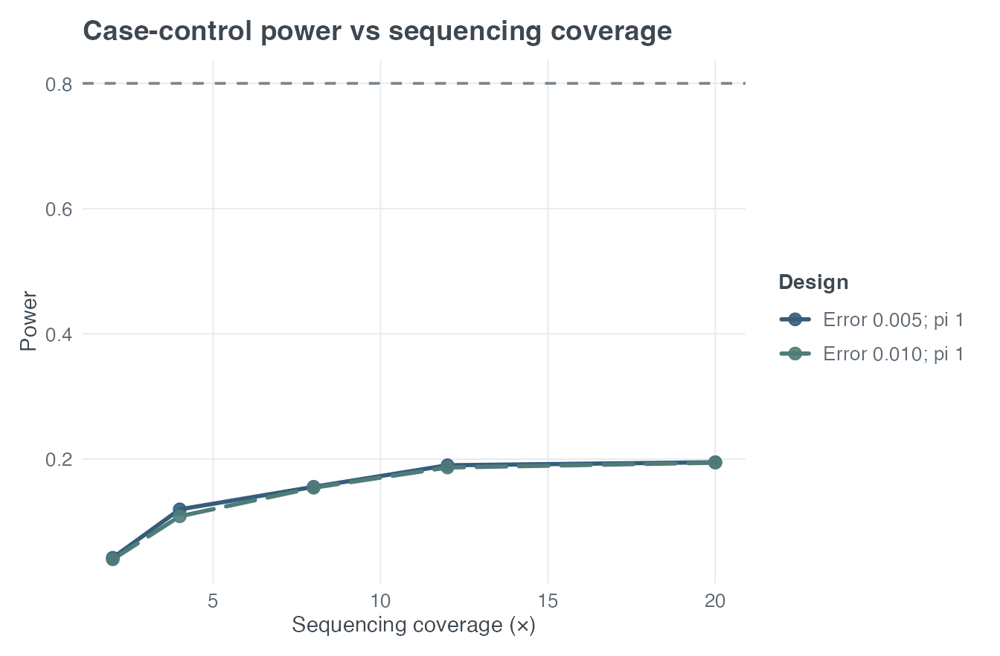
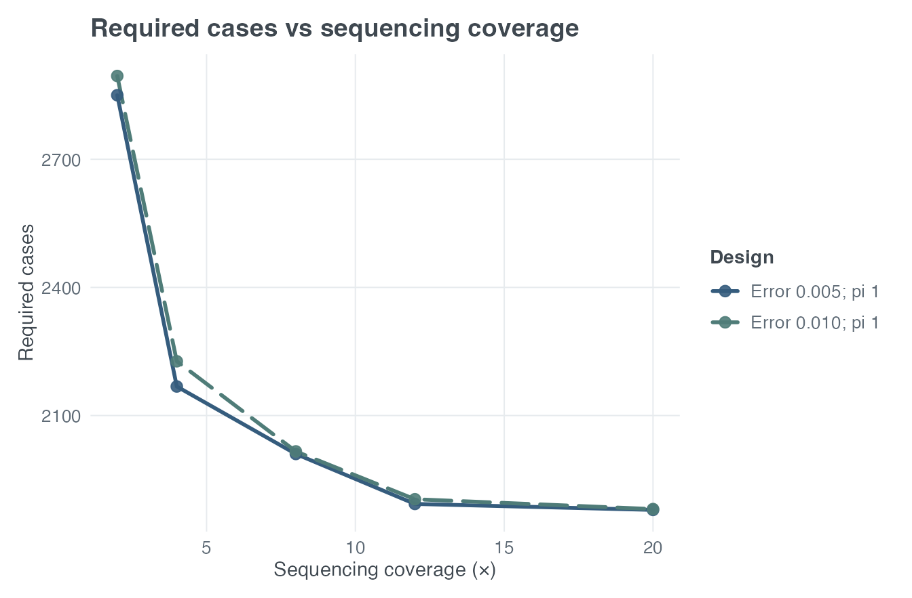

vignettes/paweh-06-sequencing-study-design.Rmd
paweh-06-sequencing-study-design.Rmdpaweh supports prospective analytic power and
minimum-sample-size-necessary (MSSN) calculations for two scientifically
different sequencing designs. The inputs describe a planned experiment;
these functions do not process FASTQ, BAM, or VCF files and do not
perform downstream association testing.
For case-control sequencing designs, sequencing is the common reference:
baseline genotype -> group-specific sequencing call -> Ahn/Chapman–Nam trend NCP -> power or MSSN.
Phenotype misclassification, locus heterogeneity, and conventional genotype misclassification are independent sensitivity scenarios. Each starts from the same biological baseline and uses the same sequencing design; conventional genotype misclassification is applied after the sequencing call.
For affected-child sequencing trios, the pathway is:
latent Mendelian trio state -> raw read-count likelihood -> efficient information -> Kim TDT1-NGS NCP -> power or MSSN.
The case-control calculation therefore propagates uncertainty in called genotypes. TDT1-NGS instead retains raw-read likelihood information and does not hard-call the three genotypes. These are not interchangeable methods.
paweh
| Feature | Case-control NGS | TDT1-NGS |
|---|---|---|
| Sampling unit | Cases and controls | Complete father-mother-affected-child trios |
| Sequencing information | Called-genotype probabilities | Raw read-count likelihood |
| Association kernel | Ahn/Chapman–Nam trend NCP | Kim efficient-information NCP |
| Public power function | cc_ngs_power() |
tdt_ngs_power() |
| Public MSSN function | cc_ngs_mssn() |
tdt_ngs_mssn() |
| Locus heterogeneity | Available | Ordinary-TDT NCP attenuation sensitivity |
| Phenotype misclassification | Available | Ordinary-TDT NCP attenuation sensitivity |
Both designs use fixed coverage. CC-NGS permits separate case/control depths and errors. TDT1-NGS permits separate father, mother, and child depths with a common directional read-error pair. Neither uses simulation.
Kim (2015) used adolescent idiopathic scoliosis (AIS) to illustrate a
low-coverage trio design. The motivating variant, rs1400180, had a
reported global minor-allele frequency near 0.349; the design
calculation used 0.35. The published assumptions were HWE, symmetric
read error 0.025, genome-wide alpha = 5e-8, a
multiplicative effect reported as OR at least 2, and target power 0.90.
In the TDT1-NGS parameterization this effect is R1 = 2,
with R2 = R1^2.
kim_4x <- tdt_ngs_mssn(
power = 0.90,
pd = 0.35,
R1 = 2,
coverage = 4,
seq_error = 0.025,
alpha = 5e-8,
verbose = FALSE
)
kim_25x <- tdt_ngs_mssn(
power = 0.90,
pd = 0.35,
R1 = 2,
coverage = 25,
seq_error = 0.025,
alpha = 5e-8,
verbose = FALSE
)
data.frame(
coverage = c("4x", "25x"),
published_trios = c(654, 416),
paweh_trios = c(kim_4x$MSSN_trios, kim_25x$MSSN_trios)
)
#> coverage published_trios paweh_trios
#> 1 4x 654 654
#> 2 25x 416 416Under Kim’s published HWE design with MAF 0.35, symmetric read error
0.025, genome-wide alpha
,
and multiplicative effect R1 = 2, PAWEH exactly reproduces
the reported integer requirements of 654 complete trios at 4x and 416 at
25x for 90% power. This statement applies to this specific published
design and is not a claim about every model in the paper.
Kim’s full Table 3 pairs three target powers with three effect sizes. All six integer results reproduce exactly:
kim_table3 <- data.frame(
coverage = rep(c(4, 25), times = 3),
power = rep(c(0.90, 0.70, 0.10), each = 2),
R1 = rep(c(2.0, 1.8, 1.5), each = 2),
published_trios = c(654, 416, 716, 456, 733, 466)
)
kim_table3$paweh_trios <- c(
kim_4x$MSSN_trios,
kim_25x$MSSN_trios,
vapply(3:6, function(i) {
tdt_ngs_mssn(
power = kim_table3$power[i], pd = 0.35, R1 = kim_table3$R1[i],
coverage = kim_table3$coverage[i], seq_error = 0.025,
alpha = 5e-8, verbose = FALSE
)$MSSN_trios
}, numeric(1))
)
kim_table3
#> coverage power R1 published_trios paweh_trios
#> 1 4 0.9 2.0 654 654
#> 2 25 0.9 2.0 416 416
#> 3 4 0.7 1.8 716 716
#> 4 25 0.7 1.8 456 456
#> 5 4 0.1 1.5 733 733
#> 6 25 0.1 1.5 466 466For Kim’s one-degree-of-freedom multiplicative model, the NCP is
where is the number of complete trios and is the nuisance-adjusted per-trio information obtained from the raw-read likelihood under the null. The public interface does not require users to manipulate the full information matrix.
tdt_seq_power <- tdt_ngs_power(
N = 5000,
pd = 0.325,
R1 = 1.2,
coverage = 12,
seq_error = 0.005,
alpha = 5e-8,
verbose = FALSE
)
tdt_seq_mssn <- tdt_ngs_mssn(
power = 0.80,
pd = 0.325,
R1 = 1.2,
coverage = 12,
seq_error = 0.005,
alpha = 5e-8,
verbose = FALSE
)
data.frame(
quantity = c("Power at 5,000 trios", "Required trios", "Total individuals"),
value = c(
tdt_seq_power$power,
tdt_seq_mssn$MSSN_trios,
tdt_seq_mssn$total_individuals
)
)
#> quantity value
#> 1 Power at 5,000 trios 7.072653e-01
#> 2 Required trios 5.507000e+03
#> 3 Total individuals 1.652100e+04The MSSN calculation first finds the target one-degree-of-freedom NCP and then solves analytically for . It is not an iterative simulation over possible trio counts.
TDT1-NGS can also report phenotype misclassification as a separate
sensitivity scenario. It obtains the ordinary-TDT per-trio coefficient
with and without misclassification and applies
to the sequencing NCP. The bridge fixes
,
,
and
.
Prevalence is used only by this bridge, and pi01 is the
probability that an unaffected individual is misclassified or
ascertained as affected. Kim’s raw-read likelihood, information matrix,
and efficient information are unchanged.
tdt_pheno <- tdt_ngs_power(
N = 5000, pd = 0.325, R1 = 1.2,
coverage = 12, seq_error = 0.005,
pheno_misclass = TRUE, prev = 0.01, pi01 = 0.05,
alpha = 5e-8, verbose = FALSE
)
data.frame(
scenario = names(tdt_pheno$scenarios),
lambda = vapply(tdt_pheno$scenarios, `[[`, numeric(1), "lambda"),
power = vapply(tdt_pheno$scenarios, `[[`, numeric(1), "power")
)
#> scenario lambda power
#> sequencing_only sequencing_only 35.9606943 7.072653e-01
#> phenotype_misclassification phenotype_misclassification 0.9419147 3.718473e-06
tdt_pheno$scenarios$phenotype_misclassification$ordinary_tdt_bridge
#> $prev
#> [1] 0.01
#>
#> $pi01
#> [1] 0.05
#>
#> $pd
#> [1] 0.325
#>
#> $R1
#> [1] 1.2
#>
#> $R2
#> [1] 1.44
#>
#> $delta_prime
#> [1] 1
#>
#> $theta1
#> [1] 0.325
#>
#> $gT_noerror
#> [1] 0.233794
#>
#> $gNT_noerror
#> [1] 0.219375
#>
#> $ncp_per_trio_noerror
#> [1] 0.0009175736
#>
#> $gT_pheno
#> [1] 0.2216772
#>
#> $gNT_pheno
#> [1] 0.219375
#>
#> $ncp_per_trio_pheno
#> [1] 2.403391e-05
#>
#> $attenuation_factor
#> [1] 0.02619289
#>
#> $status
#> [1] "estimated"
#>
#> $method
#> [1] "ordinary_TDT_NCP_attenuation_bridge"
#>
#> $raw_read_likelihood_modified
#> [1] FALSEThe phenotype scenario scales the per-trio coefficient before MSSN inversion. It is an ordinary-TDT attenuation bridge, not a phenotype-aware raw-read likelihood, TDTae, or simulation.
Locus heterogeneity is a second independent sensitivity scenario. Its
public parameter is the heterogeneous trio fraction
heter_rate; the linked or homogeneous fraction in the
ordinary TDT equations is
.
The bridge applies
to the same sequencing-only NCP.
tdt_het <- tdt_ngs_power(
N = 5000, pd = 0.325, R1 = 1.2,
coverage = 12, seq_error = 0.005,
locus_het = TRUE, prev = 0.01, heter_rate = 0.25,
alpha = 5e-8, verbose = FALSE
)
tdt_het$scenarios$heterogeneity$ordinary_tdt_bridge
#> $modifier
#> [1] "locus_heterogeneity"
#>
#> $prev
#> [1] 0.01
#>
#> $heter_rate
#> [1] 0.25
#>
#> $effective_pi
#> [1] 0.75
#>
#> $pd
#> [1] 0.325
#>
#> $R1
#> [1] 1.2
#>
#> $R2
#> [1] 1.44
#>
#> $delta_prime
#> [1] 1
#>
#> $theta1
#> [1] 0.325
#>
#> $gT_noerror
#> [1] 0.233794
#>
#> $gNT_noerror
#> [1] 0.219375
#>
#> $ncp_per_trio_noerror
#> [1] 0.0009175736
#>
#> $gT_heterogeneity
#> [1] 0.2319916
#>
#> $gNT_heterogeneity
#> [1] 0.2211774
#>
#> $ncp_per_trio_heterogeneity
#> [1] 0.0005161352
#>
#> $attenuation_factor
#> [1] 0.5625
#>
#> $status
#> [1] "estimated"
#>
#> $method
#> [1] "ordinary_TDT_NCP_attenuation_bridge"
#>
#> $raw_read_likelihood_modified
#> [1] FALSEWhen both modifiers are requested, scenarios contains
sequencing_only, phenotype_misclassification,
and heterogeneity in that order. The two modifier scenarios
each start from sequencing_only; PAWEH does not multiply
their attenuation factors or report a combined modifier result.
coverage remains shorthand for one equal fixed depth.
The optional father_coverage, mother_coverage,
and child_coverage arguments override it independently.
Likewise, seq_error sets the symmetric shorthand
epsilon0 = epsilon1 = seq_error; either directional value
can override its side, and seq_error may be omitted when
both are supplied.
tdt_member_specific <- tdt_ngs_power(
N = 5000, pd = 0.325, R1 = 1.2,
father_coverage = 6, mother_coverage = 12, child_coverage = 20,
epsilon0 = 0.005, epsilon1 = 0.015,
alpha = 5e-8, verbose = FALSE
)
tdt_member_specific$sequencing
#> $coverage
#> father mother child
#> 6 12 20
#>
#> $father_coverage
#> [1] 6
#>
#> $mother_coverage
#> [1] 12
#>
#> $child_coverage
#> [1] 20
#>
#> $epsilon0
#> [1] 0.005
#>
#> $epsilon1
#> [1] 0.015
#>
#> $equal_coverage
#> [1] FALSE
#>
#> $symmetric_error
#> [1] FALSEThe directional convention is . Thus a genotype-0 read is alternative with probability , a genotype-2 read is alternative with probability , and a heterozygote has probability . The heterozygote probability is one-half when the errors are symmetric. These settings enter the same raw-read latent-state likelihood; genotypes are not hard-called.
A small coverage-by-error grid helps identify whether a proposed design is in a steep low-depth region or near a higher-depth plateau.
plot_ngs_power(
design = "tdt",
coverage = c(2, 4, 8, 12, 20),
seq_error = c(0.005, 0.01),
target_power = 0.80,
N = 5000, pd = 0.325, R1 = 1.2, alpha = 5e-8
)
TDT1-NGS power across equal fixed coverage for two symmetric per-read error assumptions.
plot_ngs_mssn(
design = "tdt",
coverage = c(2, 4, 8, 12, 20),
seq_error = c(0.005, 0.01),
power = 0.80, pd = 0.325, R1 = 1.2, alpha = 5e-8
)
Required complete trios across equal fixed coverage for two symmetric per-read error assumptions.
Low-to-moderate depth gains can be large, whereas gains at higher depth may plateau. The effect of sequencing error remains setting-dependent and should not be assumed negligible. The current fixed-depth TDT1-NGS implementation does not support a design in which any trio member is modeled at exactly 1x coverage under the full nuisance parameterization. This is a specific identifiability boundary of the implemented model, not a claim that 1x sequencing is universally unusable.
Ahn et al. (2007) studied ordinary genotype misclassification, not
sequencing depth. The paper supplies genotype-error probabilities
directly. PAWEH implements Ahn Equation (1), its analytic MSSN
rearrangement, and the published trend scores T001 =
(0,0,1), T011 = (0,1,1), and T012 =
(0,1,2).
The stronger numerical example uses prevalence 0.005, marker and
disease allele frequencies 0.30,
,
and relative risks 2 and 3. The following conditional frequencies were
independently reconstructed from Ahn’s genetic model during package
validation. Adjacent-genotype errors of 5% correspond to the PAWEH
three-parameter matrix with e01 = e02 = 0.05 and
e03 = 0.
ahn_case <- c(0.398125, 0.472500, 0.129375)
ahn_control <- c(0.490461683417085, 0.419736180904523, 0.089802135678392)
ahn_no_error <- cc_power(
N_case = 1000, alpha = 0.001,
input_mode = "model_free",
g1 = ahn_case, g0 = ahn_control,
k = 1, w = c(0, 1, 2),
geno_misclass = "none", verbose = FALSE
)
ahn_adjacent_error <- cc_power(
N_case = 1000, alpha = 0.001,
input_mode = "model_free",
g1 = ahn_case, g0 = ahn_control,
k = 1, w = c(0, 1, 2),
geno_misclass = "3p", e01 = 0.05, e02 = 0.05, e03 = 0,
verbose = FALSE
)
data.frame(
scenario = c("No error", "No error", "5% adjacent error", "5% adjacent error"),
test = c("T012", "Genotype chi-square", "T012", "Genotype chi-square"),
published_approximate_power = c(0.88, 0.81, 0.79, 0.70),
paweh_power = c(
ahn_no_error$tests$trend$power,
ahn_no_error$tests$genotypes$power,
ahn_adjacent_error$tests$trend$power,
ahn_adjacent_error$tests$genotypes$power
)
)
#> scenario test published_approximate_power paweh_power
#> 1 No error T012 0.88 0.8742681
#> 2 No error Genotype chi-square 0.81 0.8060845
#> 3 5% adjacent error T012 0.79 0.7875922
#> 4 5% adjacent error Genotype chi-square 0.70 0.6992310This is a Published-method replication, not a CC-NGS sequencing-depth replication. PAWEH implements Ahn’s Equation (1) exactly and closely reproduces the paper’s ordinary genotype-misclassification power example.
Ahn takes as an input. PAWEH adds an upstream analytic bridge from sequencing assumptions to those probabilities. For true genotype , alternate-read count , and fixed depth ,
A deterministic maximum-likelihood rule calls genotype . Each transition probability
is obtained by finite summation over all possible read counts. Rows of are true genotypes and columns are called genotypes. This coverage-to-matrix bridge is a PAWEH composition; it was not proposed in the Ahn paper.
ngs_genotype_error_matrix(coverage = 4, seq_error = 0.005)
#> called_0 called_1 called_2
#> true_0 9.801495e-01 0.0198505 6.250000e-10
#> true_1 6.250000e-02 0.8750000 6.250000e-02
#> true_2 6.250000e-10 0.0198505 9.801495e-01The public case-control interfaces construct true case and control genotype probabilities from the disease model, apply the sequencing transition matrix, optionally apply the ordinary PAWEH genotype-misclassification model, and then use the Ahn/Chapman–Nam trend NCP.
cc_seq_power <- cc_ngs_power(
N_case = 1000,
alpha = 5e-8,
prev = 0.05,
pd = 0.30,
R2 = 1.8,
coverage = 4,
seq_error = 0.005,
MOI = "M",
k = 1,
verbose = FALSE
)
cc_seq_mssn <- cc_ngs_mssn(
power = 0.80,
alpha = 5e-8,
prev = 0.05,
pd = 0.30,
R2 = 1.8,
coverage = 4,
seq_error = 0.005,
MOI = "M",
k = 1,
verbose = FALSE
)
data.frame(
quantity = c(
"Power at 1,000 cases", "Required cases", "Required controls", "Total MSSN"
),
value = c(
cc_seq_power$power,
cc_seq_mssn$MSSN_case,
cc_seq_mssn$MSSN_ctrl,
cc_seq_mssn$MSSN_total
)
)
#> quantity value
#> 1 Power at 1,000 cases 0.1197042
#> 2 Required cases 2168.0000000
#> 3 Required controls 2168.0000000
#> 4 Total MSSN 4336.0000000Sequencing uncertainty is upstream of the published trend NCP. The MSSN calculation remains analytic after inversion of the target NCP.
For both cc_ngs_power() and cc_ngs_mssn(),
coverage and seq_error remain common
shorthand. case_coverage and ctrl_coverage
independently override coverage;
case_seq_error and ctrl_seq_error
independently override seq_error. A common parameter may be
omitted when both corresponding overrides are supplied. Explicit invalid
overrides, including NULL, are rejected. Only effective
parameters are validated.
cc_differential <- cc_ngs_power(
N_case = 1000, alpha = 0.05, prev = 0.05, pd = 0.30, R2 = 1.8,
coverage = 10, seq_error = 0.01,
case_coverage = 4, case_seq_error = 0.04,
locus_het = TRUE, pi = 0.75, verbose = FALSE
)
cc_differential$sequencing
#> $case_coverage
#> [1] 4
#>
#> $ctrl_coverage
#> [1] 10
#>
#> $case_seq_error
#> [1] 0.04
#>
#> $ctrl_seq_error
#> [1] 0.01
#>
#> $case_transition_matrix
#> called_0 called_1 called_2
#> true_0 0.84934656 0.1506509 0.00000256
#> true_1 0.06250000 0.8750000 0.06250000
#> true_2 0.00000256 0.1506509 0.84934656
#>
#> $ctrl_transition_matrix
#> called_0 called_1 called_2
#> true_0 9.957338e-01 0.0042662 9.910000e-18
#> true_1 1.074219e-02 0.9785156 1.074219e-02
#> true_2 9.910000e-18 0.0042662 9.957338e-01CC-NGS also accepts the ordinary case-control phenotype-error
parameters: pheno_misclass, theta, and
phi. Here theta is the probability that a
truly affected individual is classified as a control, and
phi is the probability that a truly unaffected individual
is classified as a case. The transformation uses disease prevalence
exactly as cc_power() and cc_mssn() do.
cc_pheno_differential <- cc_ngs_power(
N_case = 1000, alpha = 0.05, prev = 0.05, pd = 0.30, R2 = 1.8,
coverage = 10, seq_error = 0.01,
case_coverage = 4, case_seq_error = 0.04,
locus_het = TRUE, pi = 0.75,
pheno_misclass = TRUE, theta = 0.02, phi = 0.01,
verbose = FALSE
)
cc_pheno_differential$errors$phenotype_misclass
#> $enabled
#> [1] FALSE
#>
#> $theta
#> [1] 0.02
#>
#> $phi
#> [1] 0.01
#>
#> $g_case_before_pheno_misclass
#> [1] 0.4031299 0.4635904 0.1332797
#>
#> $g_ctrl_before_pheno_misclass
#> [1] 0.49457211 0.41770577 0.08772212
#>
#> $g_case_after_pheno_misclass
#> [1] 0.4031299 0.4635904 0.1332797
#>
#> $g_ctrl_after_pheno_misclass
#> [1] 0.49457211 0.41770577 0.08772212
#>
#> $case_denom
#> [1] NA
#>
#> $ctrl_denom
#> [1] NAThe same interfaces support ordinary case-control "1p",
"2p", "3p", and "diff3p" genotype
misclassification after sequencing. Sequencing models read and
genotype-call uncertainty; geno_misclass then models error
in those called genotypes. Both stages may be active, and each may
differ between cases and controls.
cc_all_errors <- cc_ngs_power(
N_case = 1000, alpha = 0.05, prev = 0.05, pd = 0.30, R2 = 1.8,
case_coverage = 4, ctrl_coverage = 10,
case_seq_error = 0.04, ctrl_seq_error = 0.01,
locus_het = TRUE, pi = 0.75,
pheno_misclass = TRUE, theta = 0.02, phi = 0.01,
geno_misclass = "diff3p",
case_e01 = 0.03, case_e02 = 0.01, case_e03 = 0.004,
ctrl_e01 = 0.01, ctrl_e02 = 0.005, ctrl_e03 = 0.002,
verbose = FALSE
)
names(cc_all_errors$scenarios)
#> [1] "sequencing_only" "phenotype_misclassification"
#> [3] "heterogeneity" "genotype_misclassification"
cc_all_errors$scenarios$genotype_misclassification$errors$genotype_misclass
#> $enabled
#> [1] TRUE
#>
#> $model
#> [1] "diff3p_homhet_homhom"
#>
#> $diff_source
#> [1] "explicit"
#>
#> $diff_multiplier
#> [1] 1
#>
#> $case_params
#> e01 e02 e03
#> 0.030 0.010 0.004
#>
#> $ctrl_params
#> e01 e02 e03
#> 0.010 0.005 0.002
#>
#> $M_case
#> [,1] [,2] [,3]
#> [1,] 0.966 0.03 0.004
#> [2,] 0.010 0.98 0.010
#> [3,] 0.004 0.03 0.966
#>
#> $M_ctrl
#> [,1] [,2] [,3]
#> [1,] 0.988 0.01 0.002
#> [2,] 0.005 0.99 0.005
#> [3,] 0.002 0.01 0.988CC-NGS always reports sequencing_only. Requested
phenotype and heterogeneity scenarios transform the biological baseline
before group-specific sequencing. The requested
genotype-misclassification scenario sequences the unmodified baseline
first and applies conventional genotype error to the called genotypes.
Multiple modifiers request multiple independent results rather than a
combined error path. The sequencing matrices give
t(M_seq_case) %*% g_case_preseq and
t(M_seq_ctrl) %*% g_ctrl_preseq. In the genotype scenario,
the genotype-error matrices then transform those calls. All matrices
have current-genotype rows and observed-genotype columns; equivalently,
each group’s genotype scenario uses M_seq %*% M_geno.
The sequencing list records all four effective
parameters and both matrices. Legacy coverage and
seq_error fields retain common inputs (or NULL
if omitted); transition_matrix retains the case matrix,
shared by both groups when settings are equal. Use the explicit matrices
for differential designs. The freqs list exposes
post-heterogeneity and pre-sequencing frequencies, and the
errors$phenotype_misclass list records the phenotype
transformation and its observed-group denominators. Post-sequencing and
final frequencies are available in freqs, while
errors$genotype_misclass records the selected model,
parameters, and case/control matrices.
Different sequencing or genotype-error mechanisms can create observed
differences even under a biological null. Power and MSSN are nominal
asymptotic results using the existing chi-square critical value; neither
the null distribution nor Type I error is independently recalibrated for
differential observation. In particular, pi = 0 need not
remove the observed contrast. Plot extensions are deferred; the plotting
examples below use common sequencing settings.
Setting seq_error = 0 eliminates incorrect base reads,
but it does not make finite-depth heterozygote calls perfect. For a true
heterozygote,
At low , every observed read can come from the same allele. Such an observation can be more likely under a homozygous genotype, creating call uncertainty even with no per-read sequencing error. This probability decreases with depth but is nonzero at every finite depth.
list(
coverage_2 = ngs_genotype_error_matrix(2, 0),
coverage_10 = ngs_genotype_error_matrix(10, 0)
)
#> $coverage_2
#> called_0 called_1 called_2
#> true_0 1.00 0.0 0.00
#> true_1 0.25 0.5 0.25
#> true_2 0.00 0.0 1.00
#>
#> $coverage_10
#> called_0 called_1 called_2
#> true_0 1.0000000000 0.0000000 0.0000000000
#> true_1 0.0009765625 0.9980469 0.0009765625
#> true_2 0.0000000000 0.0000000 1.0000000000
plot_ngs_power(
design = "cc",
coverage = c(2, 4, 8, 12, 20),
seq_error = c(0.005, 0.01),
target_power = 0.80,
N_case = 1000, alpha = 5e-8,
prev = 0.05, pd = 0.30, R2 = 1.8, MOI = "M", k = 1
)
Case-control sequencing trend power across equal fixed coverage for two symmetric per-read error assumptions.
plot_ngs_mssn(
design = "cc",
coverage = c(2, 4, 8, 12, 20),
seq_error = c(0.005, 0.01),
power = 0.80, alpha = 5e-8,
prev = 0.05, pd = 0.30, R2 = 1.8, MOI = "M", k = 1
)
Required case sample size across equal fixed coverage for two symmetric per-read error assumptions.
These are deterministic scenario curves, not uncertainty bands. A robust design should be examined over scientifically plausible depth and error values rather than only at a single optimistic point.
Case-control sequencing designs can dilute the associated-case distribution with the control distribution:
Here pi = 1 retains the full locus-associated case
distribution and pi = 0 removes the locus-specific
contrast. The master switch is strict: when
locus_het = FALSE, pi must remain 1.
cc_heterogeneous <- cc_ngs_power(
N_case = 1000, alpha = 0.05,
prev = 0.05, pd = 0.30, R2 = 1.8,
coverage = 4, seq_error = 0.005,
MOI = "M", k = 1,
locus_het = TRUE, pi = 0.75,
verbose = FALSE
)
data.frame(
pi = cc_heterogeneous$locus_het$pi,
lambda = cc_heterogeneous$lambda,
power = cc_heterogeneous$power
)
#> pi lambda power
#> 1 0.75 10.41674 0.8975178pi = 0 boundary
With equal sequencing mechanisms and
locus_het = TRUE, pi = 0, case and control called genotype
distributions are identical. Therefore the NCP is zero and power equals
alpha. If requested power exceeds alpha, no
finite sample size exists.
The plotting-data interface preserves this scientific boundary instead of inventing a very large finite MSSN:
pi_boundary <- plot_ngs_mssn(
design = "cc",
coverage = 4,
seq_error = 0.005,
return_data = TRUE,
power = 0.80, alpha = 0.05,
prev = 0.05, pd = 0.30, R2 = 1.8, MOI = "M", k = 1,
locus_het = TRUE, pi = c(1, 0.75, 0.50, 0)
)
pi_boundary[, c("pi", "MSSN_case", "finite_mssn", "status")]
#> pi MSSN_case finite_mssn status
#> 1 1.00 430 TRUE finite
#> 2 0.75 754 TRUE finite
#> 3 0.50 1671 TRUE finite
#> 4 0.00 NA FALSE no finite MSSNThe pi = 0 row remains visible with
MSSN_case = NA, finite_mssn = FALSE, and
status "no finite MSSN".
CC-NGS assumes fixed coverage within each group; TDT1-NGS allows a separate fixed coverage value for each trio member. They do not yet integrate over a realistic empirical or budget-generated coverage distribution in which a locus may be 0x in some samples, 1x or 2x in others, and 4x or greater elsewhere. Variable/BGE coverage-distribution modeling is deferred.
| Assumption | CC-NGS | TDT1-NGS |
|---|---|---|
| Locus | Single biallelic | Single biallelic |
| Sampling | Cases and controls | Complete affected-child trios |
| Genetic model | M, dominant, or recessive trend scores | Multiplicative |
| Parental HWE/random mating | Not applicable | Assumed by current public design |
| Coverage | Fixed depth per group | Fixed depth per trio member |
| Public read error | Symmetric | Common directional pair |
| Sequencing analysis | Deterministic genotype calls | Raw-read latent-state likelihood |
| Case/control observation error | Common or differential sequencing | Not applicable |
| Locus heterogeneity | Optional canonical mixture | Optional ordinary-TDT NCP attenuation bridge |
| Phenotype misclassification | Optional prevalence-weighted mixture | Optional ordinary-TDT NCP attenuation bridge |
| Genotype misclassification | Optional 1p, 2p, 3p, or differential 3p | Not implemented |
| Simulation | None | None |
Deferred capabilities include variable/BGE coverage, simulation validation, cost-depth optimization, TDT genotype misclassification, and a sequencing Shiny module. The existing dashboard covers the non-sequencing study-design modules.
Ahn K, Haynes C, Kim W, St Fleur R, Gordon D, Finch SJ. The effects of SNP genotyping errors on the power of the Cochran-Armitage linear trend test for case/control association studies. Annals of Human Genetics. 2007;71(2):249–261. https://doi.org/10.1111/j.1469-1809.2006.00318.x.
Chapman DG, Nam JM. Asymptotic power of chi square tests for linear trends in proportions. Biometrics. 1968;24(2):315–327. https://doi.org/10.2307/2528035.
Gordon D, Finch SJ, Kim W. Heterogeneity in Statistical Genetics: How to Assess, Address, and Account for Mixtures in Association Studies. Springer; 2020. https://doi.org/10.1007/978-3-030-61121-7.
Kim W. Transmission disequilibrium tests based on read counts for low-coverage next-generation sequence data. Human Heredity. 2015;80(1):36–49. https://doi.org/10.1159/000434645.
sessionInfo()
#> R version 4.6.1 (2026-06-24)
#> Platform: aarch64-apple-darwin23
#> Running under: macOS Tahoe 26.6.2
#>
#> Matrix products: default
#> BLAS: /Library/Frameworks/R.framework/Versions/4.6/Resources/lib/libRblas.0.dylib
#> LAPACK: /Library/Frameworks/R.framework/Versions/4.6/Resources/lib/libRlapack.dylib; LAPACK version 3.12.1
#>
#> locale:
#> [1] C.UTF-8/C.UTF-8/C.UTF-8/C/C.UTF-8/C.UTF-8
#>
#> time zone: America/New_York
#> tzcode source: internal
#>
#> attached base packages:
#> [1] stats graphics grDevices utils datasets methods base
#>
#> other attached packages:
#> [1] paweh_0.99.0 BiocStyle_2.40.0
#>
#> loaded via a namespace (and not attached):
#> [1] gtable_0.3.6 jsonlite_2.0.0 dplyr_1.2.1
#> [4] compiler_4.6.1 BiocManager_1.30.27 tidyselect_1.2.1
#> [7] dichromat_2.0-1 jquerylib_0.1.4 systemfonts_1.3.2
#> [10] scales_1.4.0 textshaping_1.0.5 yaml_2.3.12
#> [13] fastmap_1.2.0 ggplot2_4.0.3 R6_2.6.1
#> [16] labeling_0.4.3 generics_0.1.4 knitr_1.51
#> [19] htmlwidgets_1.6.4 tibble_3.3.1 bookdown_0.47
#> [22] desc_1.4.3 bslib_0.12.0 pillar_1.11.1
#> [25] RColorBrewer_1.1-3 rlang_1.3.0 cachem_1.1.0
#> [28] xfun_0.60 fs_2.1.0 sass_0.4.10
#> [31] S7_0.2.2 otel_0.2.0 cli_3.6.6
#> [34] withr_3.0.3 pkgdown_2.2.1 magrittr_2.0.5
#> [37] digest_0.6.39 grid_4.6.1 mvtnorm_1.4-2
#> [40] lifecycle_1.0.5 vctrs_0.7.3 evaluate_1.0.5
#> [43] glue_1.8.1 farver_2.1.2 ragg_1.5.2
#> [46] rmarkdown_2.31 pkgconfig_2.0.3 tools_4.6.1
#> [49] htmltools_0.5.9